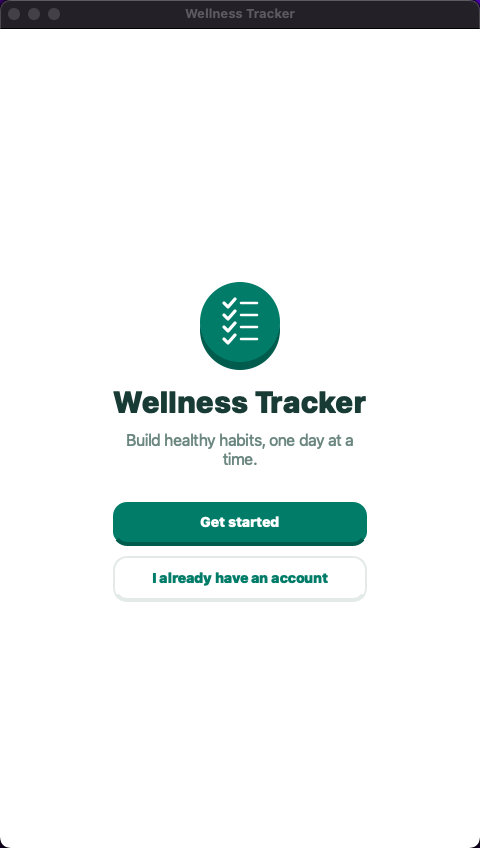
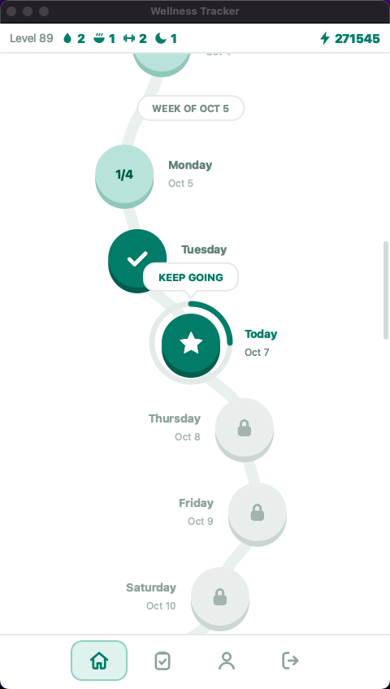
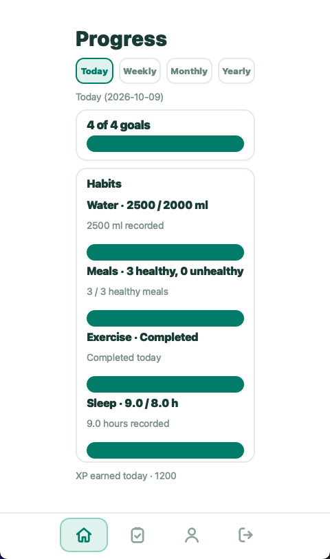
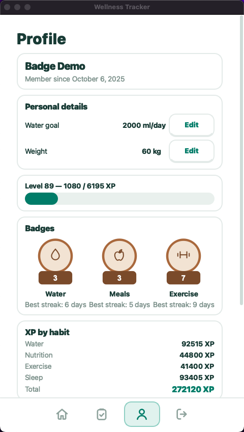

FUNCIONALIDADES
Uma rotina, vista
dia após dia.
Registros pessoais e resumos reunidos em um aplicativo desktop com interface gráfica e versão de console.
- 01
Contas de usuário
Crie uma conta, faça login e mantenha os registros ligados ao seu perfil.
- 02
Diário de hábitos
Registre água, refeições saudáveis ou não saudáveis, exercício e horas de sono.
- 03
Metas diárias
Acompanhe as metas dos hábitos e personalize sua meta de consumo de água.
- 04
Resumos por período
Veja o progresso do dia, da semana, do mês até hoje e do ano até hoje.
- 05
XP e níveis
Ganhe XP ao registrar hábitos e veja quanto falta para o próximo nível.
- 06
Sequências e badges
Acompanhe sequências atuais e recordes; água, refeições e exercício desbloqueiam badges.
GALERIA
Conheça a interface.
Capturas de tela do aplicativo.




DEMONSTRAÇÃO
Veja o projeto em ação.
Assista à apresentação do Wellness Tracker.
SAIBA MAIS
Explore o projeto.
QUEM FEZ
Equipe do projeto
- Gabriela LimaDeveloper
- Alexandre MorenoDeveloper
- Mário MotaTestes e documentação